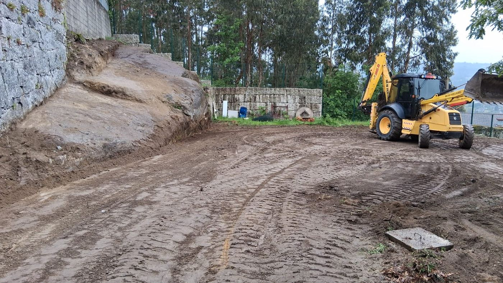

Quanto Custa Terraplanar um Terreno? Guia de Preços 2026
A pergunta mais frequente antes de avançar com uma obra é sempre a mesma: "quanto vai custar?". No caso da terraplanagem, limpeza de terrenos e construção de muros em pedra, o preço varia bastante conforme a situação concreta de cada projeto. Neste guia reunimos os valores médios praticados em Portugal em 2026, os fatores que mais influenciam o orçamento final e o que deve exigir a qualquer empresa antes de assinar.
Preços Médios de Terraplanagem em Portugal (2026)
A terraplanagem envolve escavação, nivelamento, compactação e, quando necessário, transporte de terras a vazadouro. O custo por metro quadrado é a medida mais usada para projetos de menor dimensão; por metro cúbico é mais comum em obras de maior volume.
| Tipo de trabalho | Unidade | Preço mínimo | Preço médio | Preço máximo |
|---|---|---|---|---|
| Terraplanagem simples (nivelamento) | m² | 3 € | 6 € | 12 € |
| Movimentação de terras (escavação + aterro) | m³ | 15 € | 32 € | 50 € |
| Preparação completa de terreno para construção | projeto | 3 000 € | 6 000 € | 10 000 € |
Preços Médios de Limpeza de Terrenos
A limpeza de terrenos é dos serviços com maior variação de preço: erva baixa é muito mais rápida de tratar do que mato denso ou canavial. A inclinação do terreno e a distância ao ponto de descarga de resíduos também pesam no orçamento final.
| Tipo de vegetação / situação | Unidade | Preço médio |
|---|---|---|
| Erva baixa, terreno plano | m² | 0,25 € |
| Mato médio (silvas, arbustos) | m² | 0,35 – 0,45 € |
| Mato denso, canavial ou declive acentuado | m² | 0,45 – 0,60 € |
| Limpeza geral por hectare (referência média) | hectare | 500 – 1 200 € |
| Transporte e deposição de resíduos a vazadouro | adicional | 100 – 150 € |
O que Influencia o Preço Final?
Antes de qualquer orçamento, uma empresa séria precisa de avaliar o terreno pessoalmente. Os principais fatores que fazem o preço subir ou descer são:
- Dimensão da área — trabalhos maiores têm custo por m² mais baixo
- Tipo de solo — terra solta é mais barata de trabalhar do que rocha ou argila compacta
- Inclinação e acessos — terrenos em declive ou sem acesso para máquinas aumentam o tempo de trabalho
- Volume de terra a mover — quanto mais terra a transportar, maior o custo de acarreto
- Tipo de vegetação — mato denso ou árvores exige mais equipamento e tempo
- Distância ao vazadouro — resíduos e terras sobrantes têm de ir a deposição autorizada
- Necessidade de licença — obras que exigem licença camarária podem ter custos administrativos adicionais (veja o guia de licenciamento)
Como Obter um Orçamento Justo
Siga estes passos para não ser surpreendido:
- Peça sempre orçamento presencial — desconfie de empresas que orçamentam sem ver o terreno
- Exija orçamento detalhado por escrito com descrição dos trabalhos, materiais e prazo
- Confirme se o transporte de resíduos está incluído ou se é cobrado à parte
- Verifique se a empresa tem maquinaria própria — subcontratação encarece o trabalho
- Confirme a necessidade de licença antes de iniciar (ver guia de licenciamento de terraplanagem)
- Consulte as perguntas frequentes do nosso FAQ sobre terraplanagem e construção
Quer saber exatamente quanto vai custar o seu projeto?
Fazemos a visita ao terreno e o orçamento sem custos e sem compromisso.
 Fale Connosco
Fale Connosco